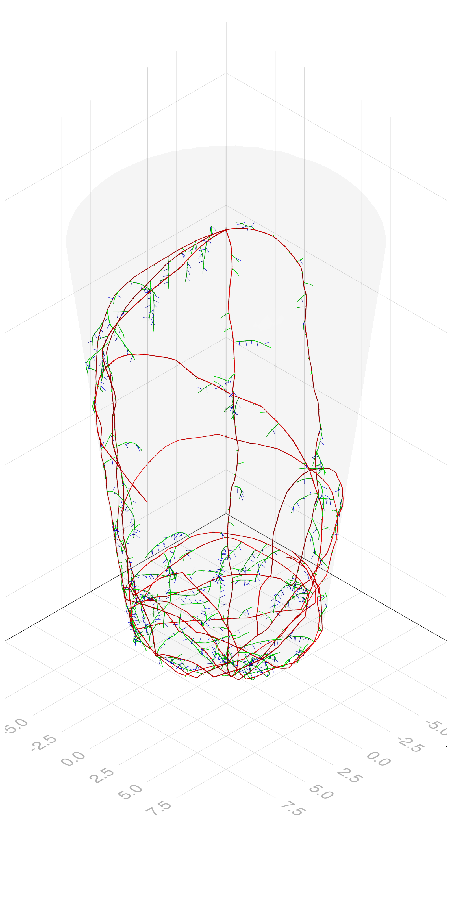

CropRootBox.jl
CropRootBox.jl implements a root system architecture simulation algorithm described in CRootBox model. Our implementation is written in a domain-specific language based on Julia using Cropbox framework. While Cropbox framework was primarily designed for helping development of conventional process-based crop models with less dynamic structural development in mind, it is still capable of handling complex structure as envisioned by functional-structural plant models (FSPM).
Installation
using Pkg
Pkg.add("CropRootBox")Getting Started
using Cropbox
using CropRootBoxBaseRoot is a common system inherited by other systems representing each root type, i.e., PrimaryRoot, FirstOrderLateralRoot, and SecondOrderLateralRoot in this example.
parameters(CropRootBox.BaseRoot; alias = true)Config for 1 system:
| BaseRoot | ||
| tropsim_trials | = | 1.0 |
| length_of_apical_zone | = | 0.5 cm |
| maximal_length | = | 3.9 cm |
| length_between_lateral_branches | = | 0.3 cm |
| length_of_basal_zone | = | 0.4 cm |
| maximum_elongation_rate | = | 1.0 cm d⁻¹ |
| axial_resolution | = | 1 cm |
| standard_deviation_of_angle | = | 30° |
| insertion_angle | = | 30° |
| angular_angle_trials | = | 20 |
| radial_angle_trials | = | 5 |
| radius | = | 0.05 cm |
| color | = | RGBA{N0f8}(1.0,1.0,1.0,1.0) |
| transition | = | nothing |
Here is an example configuration for simulating maize root growth. Some parameter values are annotated with standard deviation after ± indicating actual values are randomly sampled from normal distribution as needed.
config = @config(
:RootArchitecture => :maxB => 5,
:BaseRoot => :T => [
# P F S
0 1 0 ; # P
0 0 1 ; # F
0 0 0 ; # S
],
:PrimaryRoot => (;
lb = 0.1 ± 0.01,
la = 18.0 ± 1.8,
ln = 0.6 ± 0.06,
lmax = 89.7 ± 7.4,
r = 6.0 ± 0.6,
Δx = 0.5,
σ = 10,
θ = 80 ± 8,
N = 1.5,
a = 0.04 ± 0.004,
color = CropRootBox.RGBA(1, 0, 0, 1),
),
:FirstOrderLateralRoot => (;
lb = 0.2 ± 0.04,
la = 0.4 ± 0.04,
ln = 0.4 ± 0.03,
lmax = 0.6 ± 1.6,
r = 2.0 ± 0.2,
Δx = 0.1,
σ = 20,
θ = 70 ± 15,
N = 1,
a = 0.03 ± 0.003,
color = CropRootBox.RGBA(0, 1, 0, 1),
),
:SecondOrderLateralRoot => (;
lb = 0,
la = 0.4 ± 0.02,
ln = 0,
lmax = 0.4,
r = 2.0 ± 0.2,
Δx = 0.1,
σ = 20,
θ = 70 ± 10,
N = 2,
a = 0.02 ± 0.002,
color = CropRootBox.RGBA(0, 0, 1, 1),
)
)An instance of RootArchitecture system is created with an instance of Pot describing a boundary of root growth.
b = instance(CropRootBox.Pot)
s = instance(CropRootBox.RootArchitecture; config, options = (; box = b), seed = 0)
r = simulate!(s, stop = 100u"d")
Progress: 0%[> ] ETA: 0:52:18 ( 1.31 s/it)
Progress: 0%[> ] ETA: 0:26:31 ( 0.67 s/it)
Progress: 1%[> ] ETA: 0:13:53 ( 0.35 s/it)
Progress: 16%[====> ] ETA: 0:00:46 (22.62 ms/it)
Progress: 43%[===========> ] ETA: 0:00:13 ( 9.27 ms/it)
Progress: 93%[=========================> ] ETA: 0:00:01 ( 4.74 ms/it)
Progress: 100%[===========================] Time: 0:00:10 ( 4.48 ms/it)After 100 days of simulation, we can draw a rendering of root structure bounded in the pot.
using GLMakie
scn = CropRootBox.render(s)
GLMakie.save("root_maize.png", scn; size = (1600, 3200))
For more information about using the framework such as instance() and simulate() functions, please refer to the Cropbox documentation.